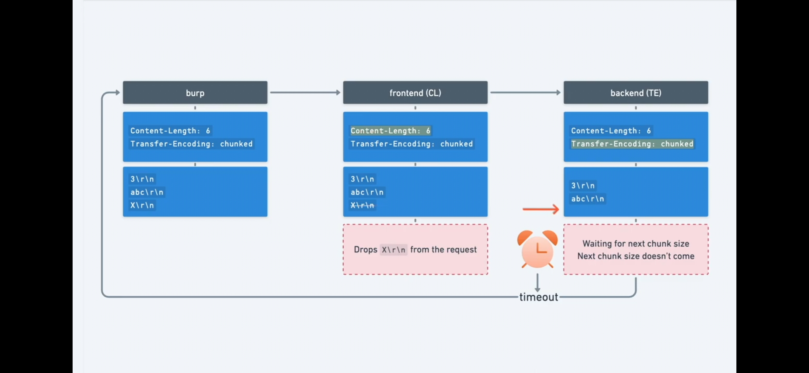
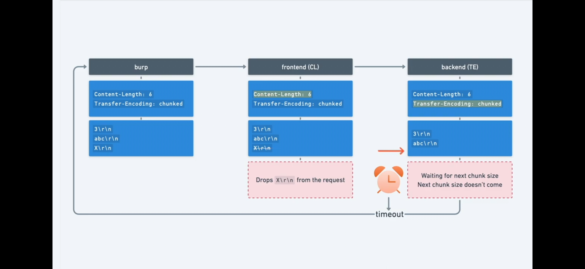
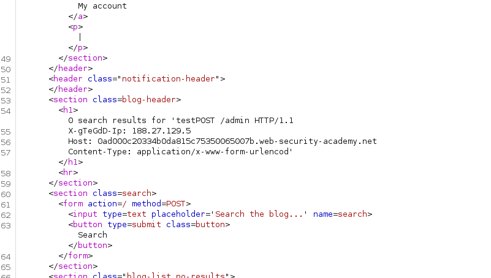

Request Smuggling
- primarily associated with HTTP/1 and only certain backend technologies of HTTP/2
- it regards the sequence in which a server processes HTTP requests
Main idea
- Bigger web apps use a
front-end server (reverse proxy/load balancer)that receive the incoming request and then distributes the request further to thebackend servers - To be more efficient, they send
multiple HTTP requestsover the same network connection! The backend then interprets where one request ends and the next one begins - In this situation, it is crucial that the front-end and back-end systems agree about the boundaries between requests, otherwise this can be exploited
How do they specify the boundary? Content-Length and Transfer-Encoding
ex: Content-Length: 11- ex:
Transfer-Encoding: chunked
\r\n |always leave space between request and contents
b |size in hex
q=smuggling |contents
0\r\n |ending zero chunk
\r\n |ending zero chunk
-
NOTE:
- not all servers support the
Transfer-Encodingheader - if both
Transfer-EncodingandContent-Lengthare present theContent-Lengthisignored!!!
- not all servers support the
-
TYPES OF ATTACKS
Put both the Content-Length and Transfer-Encoding headers into the request to trigger parsing inconsistenciesCL.TE(frontend uses CL, backend uses TE)TE.CLTE.TE(both use TE but one of the servers can be induced not to process it throughobfuscation)
-
How to detect
CL.TE 
- things to look out for:
- HTTP/1
- Turn off automatic Content Length
- First test, then send confirmation payload
- things to look out for:
-
Obfuscating TE for
TE.TE attacks
Transfer-Encoding: xchunked
Transfer-Encoding : chunked
Transfer-Encoding: chunked
Transfer-Encoding: x
Transfer-Encoding:[tab]chunked
[space]Transfer-Encoding: chunked
X: X[\n]Transfer-Encoding: chunked
Transfer-Encoding
: chunked
-
The
TE.TEis actually just aTE.CL, so follow the same methodology, try TE.CL payload test (with timeout) andobfuscate the TE headeruntil you get the timeout !!! -
TO confirm these vulns you can either smuggle a single char and hope for a
Unrecognized method GPOSTor you could trigger a POST to a/404page to trigger a404 not foundto confirm that the payload worked!
Exploiting HTTP request smuggling
-
Bypass Frontend Server
Access ControlsandFilters- ex: POST /home with a smuggled GET request for /admin
- Exercise: Delete carlos through admin panel with smuggled request
CL.TE payload
TE.CL payload
-
Revealing front-end rewriting
- the front-end server might:
- terminate the TLS connection and add some headers describing the protocol and ciphers that were used;
- add an X-Forwarded-For header containing the user's IP address;
- determine the user's ID based on their session token and add a header identifying the user; or
- add some sensitive information that is of interest for other attacks.
- Add the smuggled request into a paramter whose value is reflected in the response to reveal ANY HIDDEN HTTP HEADER values

- Exercise:

- 
- the front-end server might: